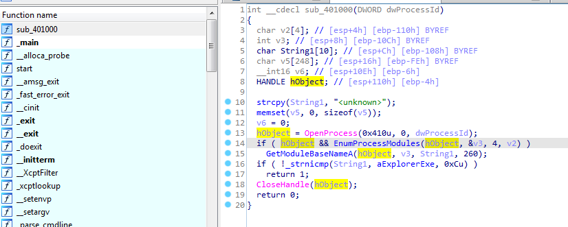
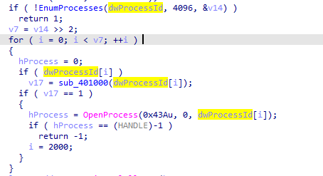
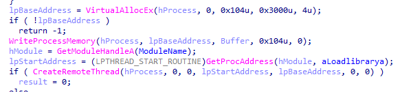
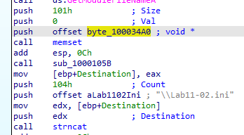
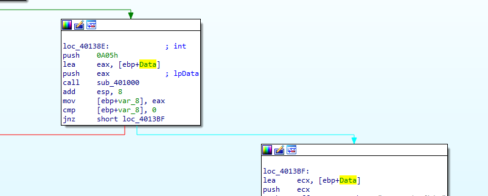
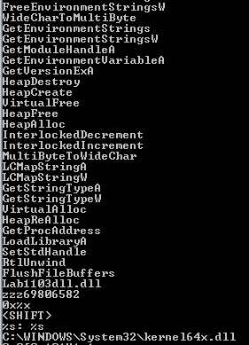
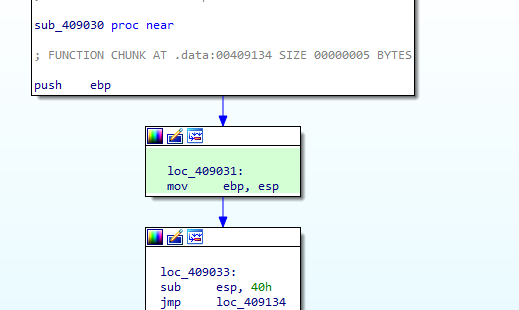

Practical Malware Analysis - Lab 11
Lab 11-1
Analyze the malware found in Lab11-01.exe.
Q1: What does the malware drop to disk?
Examining the exe in ida it first clears some memory with zeroes (rep stosd with the zero eax ecx(43h) times) then passes module handle to a function

in the function it searches for a resource (in .rsrc) named TGAD of type binary
Checking in pestudio we find there is an executable in .rsrc so it drops with LoadResource call
Q2: How does the malware achieve persistence?
Going into function call 40100 in main function (after it does the gina interception)
It regsets Ginadll value to the binary in .rsrc to registry winlogon which helps in loading them in between Winlogon and the GINA DLL
Q3: How does the malware steal user credentials?
extracting the TGAD binary using exeinfo it is a dll
Using floss we find many functions where user credentials are passed into it like the gina.dll
it will likely replace the oringinal gina
Q4: What does the malware do with stolen credentials?
Most likely it will open this file msutil and write the data to it
Q5: How can you use this malware to get user credentials from your test environment?
It doesn’t work on win 7 but likely by just logging in
Lab 11-2
Analyze the malware found in Lab11-02.dll. Assume that a suspicious file named Lab11-02.ini was also found with this malware.
Q1: What are the exports for this DLL malware?
Q2: What happens after you attempt to install this malware using rundll32.exe?
it copies the dll to many places
It creates this dll with write permission (opening in ida seems similar to Lab11-02.dll)
Q3: Where must Lab11-02.ini reside in order for the malware to install properly?
It returns not found here so it must reside there

Q4: How is this malware installed for persistence?
Going into imports found regset function, getting cross references and then going to the caller
We find it regset the dll to appleinit registry under windows registry

Q5: What user-space rootkit technique does this malware employ?
Analyzing all functions one stood out with comparing to exe files
First function call it calls modulefilename with parameter filename which likely is the Lab11-02.dll
It does memcmp with multiple exe files with the dll which means it checks if the dll is used by any of the exe files then it does three calls to three functions
first call it gets processid of the parameter input to the function plus getting process structure using snapshottool in
function 100012FE which Takes a snapshot of the specified processes, as well as the heaps, modules, and threads used by these processes. Creates a structure PROCESSENTRY32 puts the snapshot into it
second call gets send and wsock32.dll which likely loads them
Here we see the location of wsock32.dll is got by using getprocaddress
then after that we see function 10001203 is called which contains code about calling virtualprotect to change memory protections with the location of wsock32.dll allocating memory then writing to it
the rootkit technique it uses is inline hooking
Q6: What does the hooking code do?
inside the hooking install function it gets the address of the passed function send in wsock32 then pass it main install hooking
it first does some calculation, calculates the distance between arg_4 and start of send function plus 5 bytes (arg_4-(sendAddr+5))
we it allocates place in memory (0xff bytes) then copies first 5 bytes of send function (lpaddress) to the allocated memory then sets after that a jump with relative offset to complete the rest of the send function code (it will overwrite first bytes of the send)
0xe9 is opcode for JMP we see it makes send function starts with JMP then with v6 which is arg_4 which seems like the main hook function
by tracing back we find 1000113d is the function passed then to be arg_4 to jump at it
now we look at 1000113d, it first searches for substr rept to when its not found likely jump back to rest of normal send function else continue the flow
we need to debug the file to see the data but likely here it changes the recepient like a way to intercept data being sent in the email
and we notice it used destination which was used for the ini file
Q7: Which process(es) does this malware attack and why?
answered above email processes
Q8: What is the significance of the .ini file?
as ini file contains gibberish data and at the start of dllmain it read the file then passes it to function 100010B3 we bp that function at ollydbg
bp at this (https://www.ollydbg.de/Loaddll.htm)
which contains the decoded email recepient
Q9: How can you dynamically capture this malware’s activity with Wireshark?
by sending email with outlook
Lab 11-3
Analyze the malware found in Lab11-03.exe and Lab11-03.dll. Make sure that both files are in the same directory during analysis.
Q1: What interesting analysis leads can you discover using basic static analysis?
running strings we see the marked functions which are used to keylogger, and create file function which may record keys then save to a file
we also functions responsible for manipulating memory plus dlls not found in disk
Q2: What happens when you run this malware?
in procmon ofc it loads the Lab11-03.dll then creates the new dll inet_epar32.dll
it modifies the file cisvc.exe
loads cmd
it looks like searching for something under syswow
the buffer is the result of formatting the string “C:WINDOWSSystem32%s” with the argument “cisvc.exe”.
then the lpfilename is set to the buffer lea ecx, [ebp + Buffer] which is then passed to the function 401070
This means that lpFileName would contain the full path to the file “C:WINDOWSSystem32cisvc.exe”.
in the function we see it create mapping view of the file into memory to likely modify it
Q3: How does Lab11-03.exe persistently install Lab11-03.dll?
After mapping the file in memory we see function used a lot 409030 in a loop then mem copied to cisvc.exe
going into the function we see simple routine with a jump
Going to the jump place we see undefined data, it might be some code as it is memcopied into cisvc so pressing c in ida reveals its assembly instructions to do some more (maybe load the lab.dll which is inet_epar32 now )
going to cisvc in my sysWOW64 it was modified (in same day i ran the malware)
seems like it should have had changed the file to contain the assembly code but it didnt work (maybe because it is meant for win xp)
Q4: Which Windows system file does the malware infect?
Q5: What does Lab11-03.dll do?
Looking at the dll we multiple functions
at start address it is creating a mutex and a file (likely to put the keys logged in))
function 10001000 gets the current window opened
here sounds like the main function it loops over 0xff (to check all keys) it it was pressed or not using getasyncstate The purpose of the code seems to be monitoring key presses, updating a string based on certain key conditions, and storing the result in a data structure (a1)
getasyncstate(16) is Shift key (16) and so on , Caps Lock key (20), Left Shift key (160), or Right Shift key (161) to check if the character is capital or not
and here it prints if a key was pressed to the kernel64 file then sleeps a bit
Q6: Where does the malware store the data it collects?
C:\WINDOWS\System32\kernel64x.dll